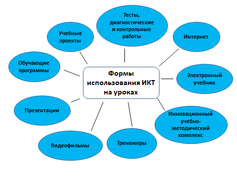

Влияние ИКТ на образование
Информационно-коммуникационные технологии (ИКТ) оказали глубокое влияние на образование и обучение. В Интернете также доступны и другие средства информационных и коммуникационных технологий, например, электронная переписка и чаты, которые обеспечивают возможность общения в режиме реального времени. Каждый год заметно улучшается качество звука и изображения, а также возрастает объем передаваемых и получаемых файлов. С использованием специального оборудования и программного обеспечения можно проводить аудио- и видеоконференции через Интернет.
Сетевые инструменты информационных и коммуникационных технологий позволяют широко пользоваться учебно-методическими и научными материалами, а также создавать и моделировать исследовательскую деятельность, проводить виртуальные учебные занятия в реальном времени. Важные технологии для системы открытого и дистанционного обучения включают видеозапись и телевидение.

Вот некоторые из способов, которыми ИКТ изменили учебный ландшафт:
- Доступ к знаниям: ИКТ сделали возможным мгновенный доступ к огромному количеству информации и знаний. Благодаря Интернету студенты могут получить доступ к образовательным ресурсам со всего мира, включая учебники, видео, онлайн-курсы и исследовательские работы.
- Интерактивное обучение: ИКТ сделали обучение более увлекательным и интерактивным. С помощью мультимедийных инструментов, таких как видео, анимация и моделирование, учащиеся могут легче понять сложные концепции. Технологии виртуальной реальности и дополненной реальности также позволили создать иммерсионное обучение.
- Индивидуальное обучение: ИКТ позволили учителям персонализировать обучение для каждого учащегося в зависимости от его стиля и темпа обучения. С помощью систем управления обучением (СУО) учителя могут отслеживать успеваемость учащихся, предоставлять персонализированную обратную связь и предлагать индивидуальные учебные материалы.
- Совместное обучение: ИКТ упростили учащимся сотрудничество друг с другом, независимо от их местонахождения. Дискуссионные онлайн-форумы, социальные сети и другие инструменты для совместной работы позволяют учащимся обмениваться идеями, работать над проектами и учиться друг у друга.
- Доступ к обучению: ИКТ предоставили людям доступ к обучению и профессиональному развитию из любой точки мира. Онлайн-курсы, вебинары и виртуальные учебные занятия позволяют людям приобретать новые навыки и быть в курсе последних событий в своей области.
- Улучшенная оценка: ИКТ сделали оценку более эффективной и действенной. С помощью онлайн-тестов и оценок учителя могут быстро оценить понимание учащимися и предоставить обратную связь. Кроме того, инструменты оценивания на основе ИИ могут предоставлять более точную и персонализированную обратную связь учащимся.
В заключение можно сказать, что ИКТ изменили образование и обучение, сделав обучение более доступным, увлекательным и персонализированным. Благодаря постоянному развитию технологий мы можем ожидать еще больше инновационных решений, которые еще больше улучшат процесс обучения.